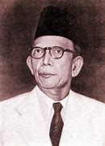

TOKOH PENDIDIKAN INDONESIA

Ki Hajar Dewantara
Ki Hajar Dewantara atau bernama asli Raden Mas Soewardi Soerjaningrat (2 Mei 1889 – 26 April 1959) adalah seorang tokoh pendidikan Indonesia yang diakui sebagai Bapak Pendidikan Nasional. Ia lahir di Yogyakarta dan memiliki latar belakang keluarga bangsawan.
Pada tahun 1912, Ki Hajar Dewantara mendirikan sekolah pendidikan di Belanda, yang kemudian dikenal dengan nama School tot Opleiding van Inlandsche Artsen (STOVIA) yang bertujuan untuk melahirkan tenaga medis pribumi. Pada tahun 1922, ia mendirikan Taman Siswa, sebuah lembaga pendidikan yang memberikan akses pendidikan bagi rakyat jelata, khususnya anak-anak petani dan buruh.
Pada tahun 1912, Ki Hajar Dewantara mendirikan sekolah pendidikan di Belanda, yang kemudian dikenal dengan nama School tot Opleiding van Inlandsche Artsen (STOVIA) yang bertujuan untuk melahirkan tenaga medis pribumi. Pada tahun 1922, ia mendirikan Taman Siswa, sebuah lembaga pendidikan yang memberikan akses pendidikan bagi rakyat jelata, khususnya anak-anak petani dan buruh. Lembaga ini dianggap sebagai salah satu lembaga pendidikan pertama di Indonesia yang menyediakan pendidikan bagi rakyat jelata.